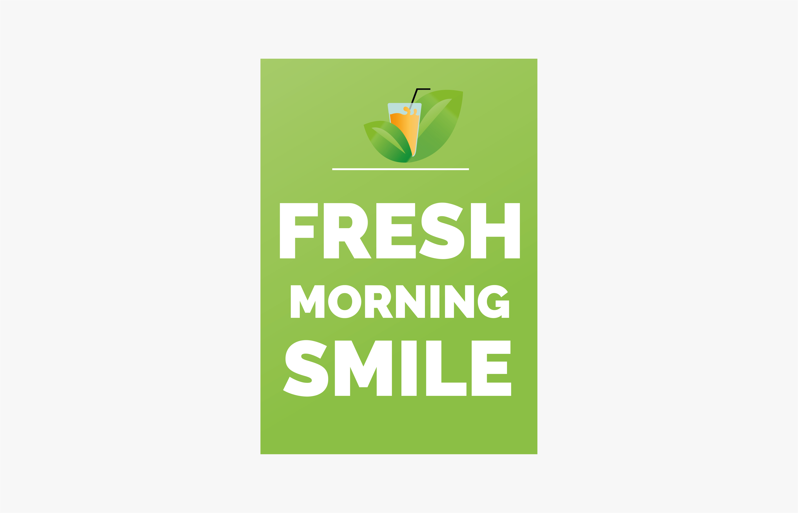

-
 Hogeschool van Amsterdam
Hogeschool van Amsterdam -
 2020
2020 -
 Individueel
Individueel
Ontbijtservice voor Airbnb's & Particulieren
In mijn eerste jaar van de opleiding CMD kregen wij tijdens de coronatijd het project 'Passie'. In dit vak mocht je zelf een onderdeel kiezen waar je je deze periode in wilde verdiepen. Ik heb gekozen om mijn concept "Ontbijtservice voor Airbnb's & particulieren" op te zetten.

Concept
Een lokale ontbijtservice die ontbijtjes levert aan Airbnb's en particulieren in de gemeente Stede Broec, Drechterland & Enkhuizen. Deze ontbijtjes (met verse producten van de lokale Kwekerij, koffiezaak Smaak van de streek en Bakkerij Stevens) worden in de ochtend vers bereid.
Nominatie: Golden Dot Awards
Tijdens de Golden Dot Awards worden elk jaar prijzen uitgereikt aan het beste studentenwerk van alle jaren. Ik ben voor dit project genomineerd en uiteindelijk 4de geworden.
Golden Dot Awards video bekijken Bekijk mijn nominatieLogo
Ik heb gekozen voor een logo met een groene frisse kleur, omdat duurzaamheid een belangrijk onderdeel is. De groene bladeren zorgen voor de versheid die het product moet uitstralen.
Promovideo
Bekijk hieronder het proces van de ontbijtjes!
De ontbijtpakketjes
Om deze reis app uit te kunnen testen met gebruikers heb ik een klikbare prototype gemaakt. Wil je mijn gehele prototype zien, neem dan een kijkje hieronder!

Prototype
Om deze reis app uit te kunnen testen met gebruikers heb ik een klikbare prototype gemaakt. Wil je mijn gehele prototype zien, neem dan een kijkje hieronder!
(Tip: op sommige plekken in de app kun je naar links of rechts swipe.)
Bekijk mijn gehele prototype